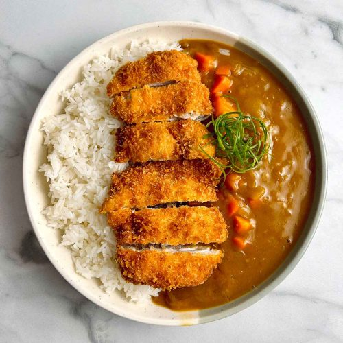

A popular Japanese dish featuring a crispy, deep-fried cutlet (katsu) of meat, most often pork (tonkatsu) or chicken (chicken katsu), served alongside a mild, thick Japanese curry sauce and steamed rice. It's a comforting meal known for its blend of textures and savory-sweet flavor profile.